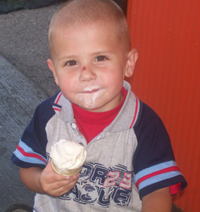

Welcome!
Distance 4 Dreams is a unique service organization that fundraises to sponsor the wish of a local child with a life-threatening disease to go to Give Kids the World Village in Kissimmee, FL through A Special Wish Foundation. At GKTW, they are treated like kings and queens. For the week, they receive passes to all of the central Florida theme parks including Universal Studios, Sea World, and Disney World. Our group then joins the family for Disney Marathon Weekend and individuals participate in the half marathon, the full marathon, or the “goofy challenge” (both races).
In the short years since our beginning in 2007, D4D has grown from a simple idea into an organization that has impacted the lives of students, faculty, staff, community members, and most importantly, some very special children and their families. This impact has now even spread beyond the University of Dayton community to reach new college campuses and new cities.
Please take some time, look around, and get to know the organization that has pushed so many students to experience new things physically, emotionally, and spiritually.
Every child has a dream. Distance 4 Dreams strives to make those dreams a reality, one mile at a time. We are dedicated to dreams, no matter the distance.